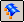
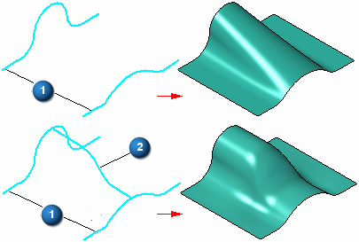
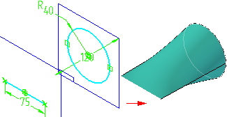
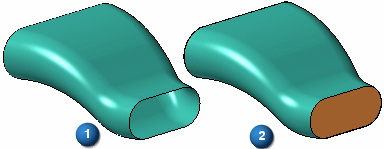
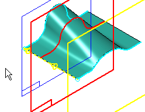
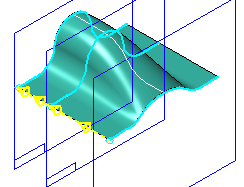
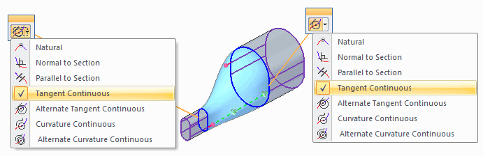

BlueSurf command
Use the BlueSurf command

to construct a surface using existing sketches or part edges. You can use the BlueSurf command to construct complex surfaces that provide many editing options.Input requirements
The sketches or edges can represent cross sections only (1) or cross sections (1) and guide curves (2). At a minimum, you must define two cross sections or one cross section and one guide curve.

The sketches or part edges can be open or closed.
Mixing open and closed elements
When constructing a BlueSurf feature, you can use both open and closed elements in a single feature. For example, you can construct a BlueSurf feature that uses a line and a closed element, such as a rectangle or a circle, as cross sections. In some situations, you may need to split elements or define vertex mapping parameters to construct the surface you want. For example, to construct a BlueSurf feature using a line and a circle, you must split the circle into two arcs. You can use the Split command to split the circle into two connected arcs.

Closing ends
When you create a BlueSurf feature using closed cross sections, you can use the End Capping options on the BlueSurf Options dialog box to specify whether the ends of the feature are left open (1) or closed (2). When you set the Close Ends option, a solid construction body is created.

Inserting sketches
You can use the Insert Sketch Step on the command bar to add new sketches to a BlueSurf feature. The geometry for the new sketch is created by intersecting a reference plane you define with the BlueSurf feature. You do not have to create the sketch geometry yourself. When you insert a sketch, the new geometry is a created as a B-spline curve. If you want the new geometry to consist of lines, arcs, or circles, you must create the new sketch manually outside of the BlueSurf command.
When you click the Insert Sketch button on the command bar, plane creation options are added to the command bar so you can define the position for the new reference plane. For example, you can use the Parallel Plane option to define an offset reference plane where you want additional control over the resultant surface.

You can then edit the sketch to change the surface shape.

When you add a cross section or guide curve to an existing BlueSurf feature using the Insert Sketch option, the new sketch is connected to the cross sections or guide curves. You can use the BlueSurf Options dialog box to specify whether Pierce Points or BlueDotsare used to connect new section to the surface.
BlueDots are only available in the ordered modeling environment
-
Pierce points
When you set the Use Pierce Points option, connect relationships are used to tie the inserted sketch to the cross sections or guide curves it intersects. When you set the Use BlueDots option, BlueDot elements are used to tie the inserted sketch to the cross sections or guide curves it intersects. The option you specify also affects how you can edit the feature later.
When you connect the new sketch using the Use Pierce Points option, you can modify the cross sections or guide curves the new sketch intersects and the B-spline curve for the inserted sketch will update. The Use Pierce Points option is most suitable for models that must conform to engineering data or dimension-driven criteria, such as turbine blades and fan housing. The Use Pierce Points option maintains the existing parent/child history of the model.
-
BlueDots
If you are working with a BlueSurf in the ordered environment, and you insert a sketch using the Use BlueDots option, you can also modify the BlueSurf feature by editing the position of the BlueDots using the Select Tool and the BlueDot Edit command bar. When you move a BlueDot, the portion of the sketches that are controlled by the BlueDot update, and that portion of the BlueSurf also updates.
The Use BlueDots option is most suitable for ordered models that are driven by esthetic requirements, such as consumer electronics products, and bottle and container design. When you use BlueDots to connect an inserted sketch, moving a BlueDot can also change the location of the reference planes of the sketches it connects.
This is because a BlueDot allows you to override the existing parent/child history of the model. For example, if you insert a sketch using a parallel reference plane with an offset value of 25 millimeters, editing the location of the BlueDot can also change the offset value of the reference plane.
This behavior can be preferable when exploring the esthetic possibilities of a surface, but can be counter-productive when working with engineered surfaces. In some cases, using BlueDots can also cause a model to take longer to update, because moving a BlueDot may require more of the model to recompute than a connect relationship would.
Note:When you set the Use BlueDots option on the BlueSurf Options dialog box, but existing constraints prevent BlueDots from being created, then pierce points are created instead.
Creating new sketches manually (ordered modeling)
Alternately, you can also create new sketches for a BlueSurf feature using the Sketch command, or you can copy an existing sketch using the Tear-Off Sketch command. You can then edit the BlueSurf feature and add the new sketches as cross sections or guide curves.
For example, when you add new cross sections, the system adds them after the existing cross sections, regardless of their physical orientation with respect to the existing cross sections. You can use the Reorder option on the Advanced tab on the BlueSurf Options dialog box to define the cross section sequence.
Cross section and guide curve connectivity
If you use a guide curve to construct a BlueSurf feature, the guide curve must intersect each cross section and be tangent continuous (the curve cannot have any sharp corners). To ensure that the guide curve stays intersected to the cross sections, you should add a connect relationship or a BlueDot at each intersection point.
End condition control
On-screen graphic handles will be displayed during placement and edit workflows to quickly change the tangency controls for cross sections and guide curve. You can use the Tangency Control options on the BlueSurf Options dialog box to define the end condition options you want for the resultant surface. For example, you can specify that the surface is tangent to the adjacent surfaces.

Many of the end condition options allow you to dynamically adjust the surface using a graphic handle (1) or by modifying a variable in the variable table. For surfaces that have several graphic handles or variables for a single cross section, you can create a master variable for all the variables that control the cross section, and then use a formula to drive all the variables for that cross section simultaneously.

BlueSurf features and lofted features
In many respects, a BlueSurf feature is constructed and behaves similarly to a lofted feature, such as a lofted surface or a lofted protrusion. For example, you can reorder cross sections, define vertex mapping rules, and define the end section conditions for a BlueSurf feature and a lofted feature.
How do I
Insert sketches into a BlueSurfAdding cross sections into a BlueSurf (ordered modeling)
Construct a BlueSurf feature
Connect sketch elements with a BlueDot
Learn more
BlueSurf overviewEnd Conditions
Cross sections
Look up more details
BlueSurf command barBlueSurf Options dialog box
BlueDot command (ordered modeling)
BlueDot Edit command bar (ordered modeling)
Hide All BlueDots command (ordered modeling environment)